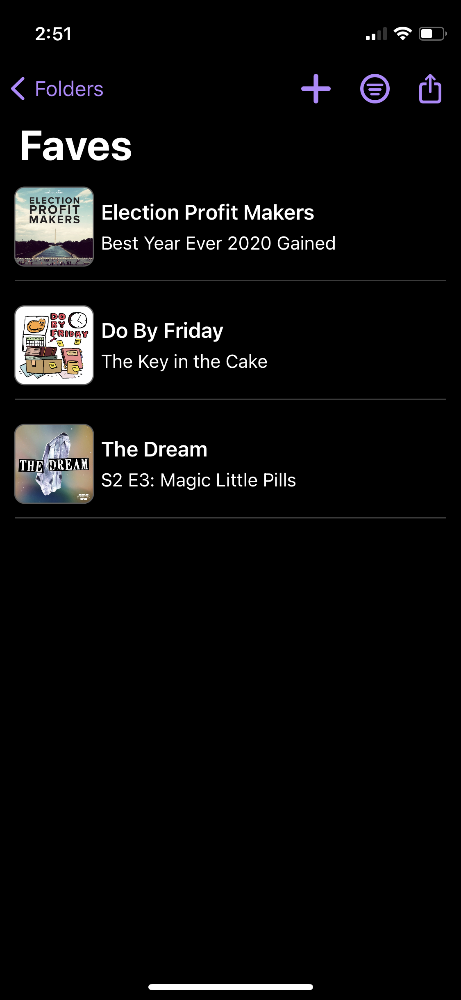
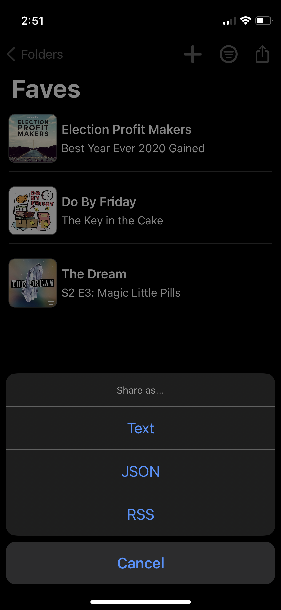
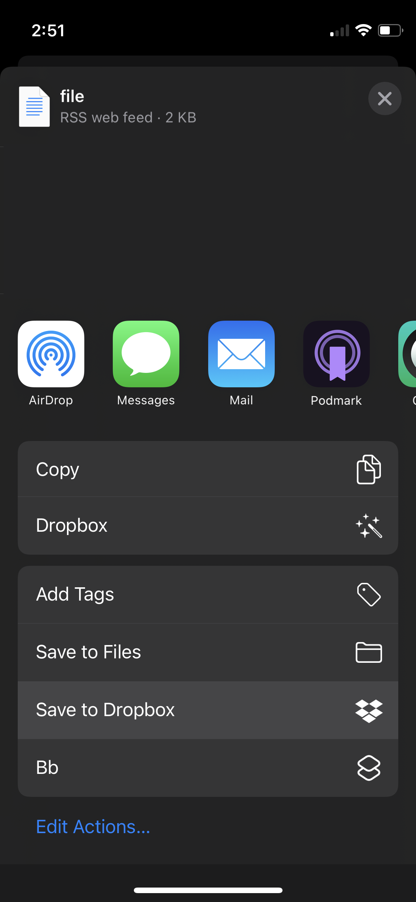
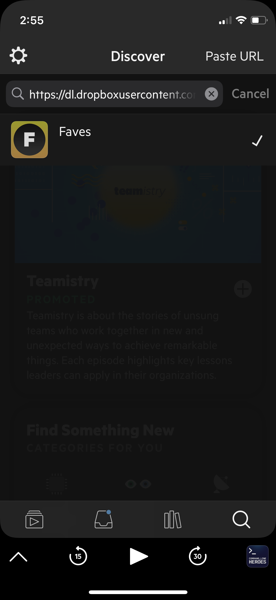
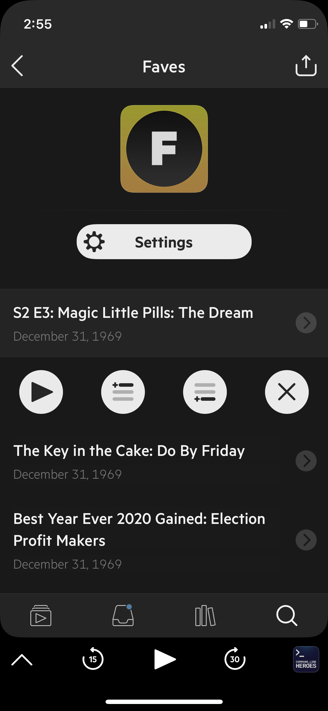

Podmark allows you to bookmark podcasts. Once you have a list, you can export that list as text, JSON, or RSS.
I use the RSS export to create my own podcast feed of my favorite episodes.



https://www.dropbox.com/s/b21acdsk21321/pod.rss?dl=0https://www.dropbox.com on your link to https://dl.dropboxusercontent.com, example:https://dl.dropboxusercontent.com/s/b21acdsk21321/pod.rss?dl=0
